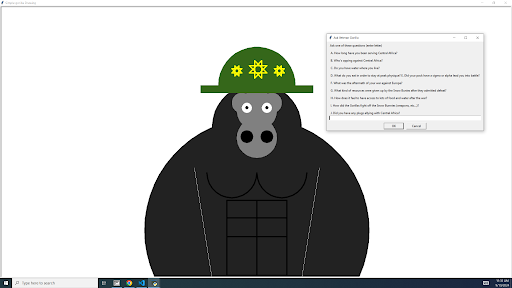
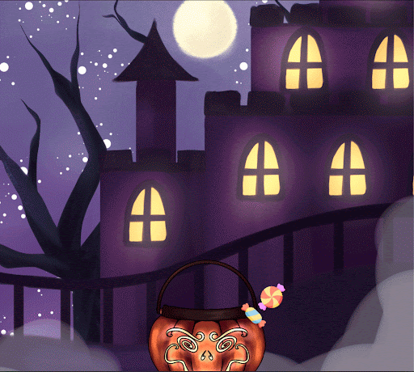

Home
Portfolio
About Me
This is my Portfolio Page!
1.1.9 Project

This wesit allows you to have a conversation with a gorilla veteran that bravely fought off the Snow Bunnies and Nonchalant Dreadheads of Europe. When you insert the letter the question u want answered is, the gorilla will come up with a response.
1.2.5 Project

This is a candy dropping game where you need to catch the correct candies by using the Halloween basket. You need to be careful that youy don't catch the wrong candies (the inverted ones).
1.3.1 Project

Am animated card of a dog that tells you several jokes.
Modified bits in pictures.

Use data files to create graphs.

Using netlogo do remix of illusions.